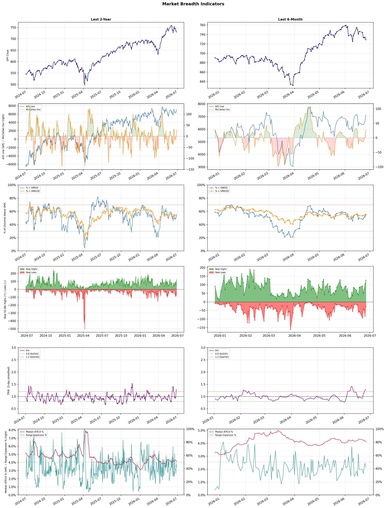

A daily market breadth and sector rotation report for active investors
| Item | Read |
|---|---|
| Regime | Selective Risk-On |
| Risk posture | Selective |
| Universe | 1,348 stocks tracked · 126 new 52-week highs · 30 active swing setups |
| Breadth | 54.7% of tracked stocks are above SMA50 — neutral range, new highs exceed new lows (126 vs 26) |
| Leadership | Airlines, Healthcare Plans, and Diagnostics & Research |
| Weakest groups | Financial Data & Stock Exchanges, Gold, and Uranium |
Use this report to prioritize research and chart review; validate entries, stops, liquidity, earnings, and risk before acting.
| Item | Read |
|---|---|
| Primary read | Selective Risk-On regime with Selective risk posture. |
| Research queue | ULCC, AAL, UAL, ALK, LUV |
| Leadership focus | Airlines, Healthcare Plans, and Diagnostics & Research |
| Caution list | Financial Data & Stock Exchanges, Gold, and Uranium |
| Review prompt | Check extension risk, chart location, fundamentals, valuation, and earnings before using any research row. |
| Item | Read |
|---|---|
| Primary read | 1 active risk warnings; use screen output as watchlist input only. |
| Bullish screens | HUM, PGNY, UNH, ADPT, GH |
| Bearish screens | none |
| Alerts / levels | Automated trigger, stop, ATR, liquidity, reward/risk, and event-risk levels are pending future enrichment. |
| Review prompt | Open the linked chart, define trigger and invalidation, then check liquidity and event risk independently. |
Risk Posture: Selective — screen backdrop supports selective research in leading industries
Metric context: McClellan below -50 = elevated selling pressure; below -100 = washout territory. Range Expansion = share of stocks with daily range above their 20-day average. Signal Density = share of tracked names appearing in signal screens.
| Breadth Date | % > SMA50 | % > SMA200 | New Highs | New Lows | McClellan | Median Range | Avg Range | Median ATR14 | Range Expansion | Signal Density |
|---|---|---|---|---|---|---|---|---|---|---|
| 2026-06-26 | 54.7% | 55.8% | 126 | 26 | 28.5 | 3.8% | 4.3% | 4.1% | 41.7% | 2.1% |

Prior comparison date: June 25, 2026
| Metric | Prior | Current | Change |
|---|---|---|---|
| Regime | Selective Risk-On | Selective Risk-On | unchanged |
| Risk Posture | Selective | Selective | unchanged |
| % > SMA50 | 51.7% | 54.7% | +3.0 pts |
| % > SMA200 | 53.8% | 55.8% | +2.0 pts |
| New Highs | 103 | 126 | +23 |
| New Lows | 83 | 26 | +57 |
Top-10 industries entering: Health Information Services. Top-10 industries leaving: Banks - Diversified. New multi-signal long setups: ADPT, APLE, CALY, DRH, EBC, EXEL, FTNT, HUM, LQDA, LTH. New multi-signal short setups: none.
| Status | Tickers | Read |
|---|---|---|
| Added | ADPT, APLE, CALY, DRH, EBC, EXEL, FTNT, HUM | New technical screen matches vs prior report. |
| Removed | AAL, AMRX, BTSG, CFG, CVBF, DAL, DFTX, DTE | No longer present in today's technical screen matches. |
| Still Active | ABSI, AEE, ALKS, ASB, CADL, EVC, GH, GNW | Appeared in both current and prior reports. |
| Promoted | none | Model Screen Score improved by at least 15 points. |
| Downgraded | none | Model Screen Score declined by at least 15 points. |
| Direction | Industry | ETF | Prior Rank | Current Rank | Days | Rank Change |
|---|---|---|---|---|---|---|
| Rose | Building Products & Equipment | XHB | 91 | 10 | 35 | +81 |
| Rose | Airlines | N/A | 75 | 1 | 42 | +74 |
| Rose | Medical Devices | N/A | 88 | 15 | 42 | +73 |
| Rose | Diagnostics & Research | N/A | 74 | 3 | 42 | +71 |
| Rose | Packaging & Containers | N/A | 90 | 21 | 42 | +69 |
Bull: The Building Products & Equipment sector is likely experiencing rising relative strength due to a potential turnaround in the housing market, as indicated by headlines discussing Lennar's recovery and PulteGroup's stock performance compared to peers. Additionally, the mention of mortgage rate concerns suggests that investors are positioning themselves for a rebound in housing demand, which could drive increased sales for building product companies. This optimism is further supported by the overall positive sentiment in the sector, as evidenced by the growing interest in stocks like Trane Technologies and the favorable outlook from analysts.
Bear: While the recent headlines may suggest a potential recovery in the housing market, the underlying economic indicators paint a more cautious picture. Rising mortgage rates, as highlighted in the concerns for ITB investors, could dampen housing demand and exacerbate affordability issues, leading to a slowdown in new home construction and subsequently reducing sales for building product companies. Furthermore, the broader economic environment, including inflationary pressures and potential recession risks, may overshadow any short-term optimism, making the sustainability of this relative strength questionable.
Verdict: The Building Products & Equipment sector's rising relative strength is primarily driven by optimism surrounding a potential recovery in the housing market, fueled by positive developments from key players like Lennar and PulteGroup, as well as increased investor interest in related stocks. However, the key risk remains the impact of rising mortgage rates and broader economic challenges, which could dampen housing demand and hinder sustained growth in new home construction, ultimately affecting sales for building product companies. Investors should monitor mortgage rate trends and economic indicators closely to gauge the sustainability of this upward momentum.
Sources: Yahoo Finance, Google News
Bull: The rising relative strength of the airline industry can be attributed to falling fuel costs, which have significantly improved profit margins for major carriers, as evidenced by the notable stock increases of American Airlines, United, and JetBlue in response to this trend. Additionally, despite some short-term pressures, such as Delta's recent stock dip due to a sector-wide profit warning, the overall positive sentiment and recovery in travel demand continue to bolster investor confidence in airline stocks, as highlighted in recent coverage by Investor's Business Daily and Yahoo Finance.
Bear: While falling fuel costs may provide a temporary boost to profit margins, the airline industry remains vulnerable to a host of systemic issues, including rising labor costs, potential economic slowdowns, and ongoing geopolitical tensions that could dampen travel demand. Additionally, the recent sector-wide profit warning from Delta indicates that not all carriers are benefiting equally, suggesting underlying weaknesses that could lead to a broader market correction in airline stocks despite short-term gains. The current optimism may be overblown, as investors could be underestimating the potential for increased operational costs and a return to pre-pandemic travel patterns that could stifle profitability.
Verdict: The airline industry's recent rise is primarily driven by falling fuel costs, which have enhanced profit margins for major carriers and spurred investor confidence, as seen in the stock performance of American Airlines, United, and JetBlue. However, investors should remain cautious of the bear case's key risk: systemic issues such as rising labor costs and potential economic slowdowns could undermine profitability and lead to a market correction, especially if travel demand falters or operational costs rise unexpectedly.
Sources: Google News
Bull: The Medical Devices sector is experiencing a rise in relative strength primarily due to ongoing innovation and a favorable market environment that positions healthcare as a defensive play amidst broader economic uncertainties. Headlines such as "Medical Technology Stocks: Innovation Endures as Valuations Reset" from AllianceBernstein highlight the sector's resilience and adaptability, while articles from Investopedia emphasize the attractiveness of healthcare stocks as safe investments during tech market volatility. Additionally, the positive outlook from Barron's on specific medical device stocks suggests a rebound potential, further bolstering investor confidence in this sector.
Bear: While the medical devices sector may currently exhibit rising relative strength, this could be misleading as it often reflects short-term market dynamics rather than sustainable growth. The emphasis on innovation and defensive positioning overlooks potential headwinds such as regulatory pressures, increasing competition from emerging technologies, and the looming threat of reimbursement cuts that could significantly impact profitability. Additionally, the current high valuations, as highlighted in the "reset" narrative, may not be justified in a potentially slowing economy, leading to a correction in stock prices as investor sentiment shifts.
Verdict: The medical devices sector's rising relative strength is fundamentally driven by ongoing innovation and a shift towards healthcare as a defensive investment amid economic uncertainties, attracting investor interest. However, key risks include regulatory pressures, increased competition, and potential reimbursement cuts, which could undermine profitability and lead to a correction in valuations if economic conditions worsen. Investors should closely monitor these factors while considering exposure to this sector.
Sources: Google News
Bull: The Diagnostics & Research sector is experiencing rising relative strength primarily due to a robust sector-wide rally, as evidenced by significant stock price increases in key players like Charles River Laboratories and Illumina. Additionally, the positive sentiment surrounding the industry is reinforced by analysts identifying substantial upside potential in companies such as Agilent Technologies, which is projected to have a 43.86% upside, and the growing integration of AI in healthcare, which is likely to drive innovation and investment in the sector.
Bear: While the Diagnostics & Research sector is indeed witnessing a rally, this may be more reflective of broader market trends rather than sustainable growth fundamentals within the industry. The significant stock price increases could be driven by speculative trading rather than solid earnings growth, and the projected upside for companies like Agilent Technologies may not account for potential regulatory headwinds, increased competition, or the risk of market saturation in AI applications. Additionally, the reliance on AI integration could lead to overvaluation if companies fail to deliver on the anticipated technological advancements and efficiencies.
Verdict: The Diagnostics & Research sector is experiencing rising relative strength primarily due to a robust sector-wide rally, as evidenced by significant stock price increases in key players like Charles River Laboratories and Illumina. Additionally, the positive sentiment surrounding the industry is reinforced by analysts identifying substantial upside potential in companies such as Agilent Technologies, which is projected to have a 43.86% upside, and the growing integration of AI in healthcare, which is likely to drive innovation and investment in the sector.
Sources: Google News
Bull: The Packaging & Containers sector is experiencing a rise in relative strength due to its resilience in the face of geopolitical tensions, such as the Iran war, which has led to increased energy costs impacting many industries. Despite recent headlines highlighting the sector's struggles, the underlying demand for packaging solutions remains robust, driven by e-commerce growth and sustainability trends, positioning companies like International Paper and Amcor to recover and outperform as supply chain disruptions stabilize and energy costs normalize. This relative stability and potential for recovery make the sector an attractive investment opportunity amidst broader market volatility.
Bear: While the bull thesis highlights resilience and potential recovery in the Packaging & Containers sector, the ongoing geopolitical tensions, particularly the Iran war, are likely to exacerbate energy cost volatility and supply chain disruptions, which could significantly erode profit margins for packaging companies. Furthermore, the sector's reliance on e-commerce growth may be overstated, as consumer spending patterns could shift in response to rising inflation and economic uncertainty, leading to decreased demand for packaging solutions. Thus, the combination of external shocks and changing consumer behavior presents substantial headwinds that could hinder the sector's recovery and performance.
Verdict: The Packaging & Containers sector is likely experiencing a rise in relative strength due to sustained demand driven by e-commerce growth and a focus on sustainability, positioning companies like International Paper and Amcor for potential recovery as supply chain disruptions stabilize. However, the key risk lies in ongoing geopolitical tensions, particularly the Iran war, which could lead to heightened energy cost volatility and shifting consumer spending patterns, potentially undermining profit margins and overall sector performance. Investors should monitor these geopolitical developments closely while considering positions in resilient packaging companies.
Sources: Google News
| Direction | Industry | ETF | Prior Rank | Current Rank | Days | Rank Change |
|---|---|---|---|---|---|---|
| Fell | Chemicals | N/A | 12 | 85 | 42 | -73 |
| Fell | Steel | SLX | 6 | 76 | 35 | -70 |
| Fell | Aerospace & Defense | ITA | 11 | 80 | 28 | -69 |
| Fell | Oil & Gas E&P | XOP | 19 | 83 | 42 | -64 |
| Fell | Solar | TAN | 3 | 67 | 35 | -64 |
Bear: While the bull thesis highlights a potential recovery in the Chemicals sector due to broader market dynamics, it overlooks the fundamental challenges facing the industry, such as rising raw material costs, regulatory pressures, and potential supply chain disruptions. Moreover, the falling relative strength trend indicates that investor sentiment is waning, suggesting that the uptick in basic materials may not translate into sustainable growth for chemical stocks, as they are still grappling with profitability pressures and competitive disadvantages in a rapidly evolving market.
Bull: The Chemicals sector is experiencing a decline in relative strength primarily due to broader market dynamics, as highlighted by the Morningstar article that notes a surge in the Basic Materials sector amidst a falling overall market. This suggests that while the Chemicals industry is underperforming relative to other sectors, it is still benefiting from a general uptick in basic materials, indicating a potential for recovery. Additionally, the focus on dividend updates from companies like Dow Inc and the analysis from Zacks on major players like Air Products and Chemicals and Albemarle suggest that while individual stocks may be under pressure, there are still underlying fundamentals that could drive future growth and investment opportunities in the sector.
Verdict: The Chemicals sector's decline appears driven by a combination of rising raw material costs and regulatory pressures, which are straining profitability despite a broader uptick in basic materials. While there may be potential for recovery as highlighted by dividend updates and individual stock fundamentals, the key risk remains that waning investor sentiment and ongoing supply chain challenges could hinder sustainable growth in the sector. Investors should closely monitor these factors and consider positioning for potential volatility while remaining cautious about long-term prospects.
Sources: Google News
Bear: While recent headlines highlight the steel industry's short-term gains and bullish sentiment, the underlying macroeconomic challenges, such as rising interest rates and potential recession fears, could significantly dampen future demand for steel, particularly in construction and infrastructure. Additionally, the excitement around AI applications may be overstated, as the steel sector's long-term growth is still heavily reliant on traditional markets, which are facing headwinds from global economic uncertainty and increased competition from alternative materials. Thus, the recent highs may not be sustainable, and a correction could be on the horizon.
Bull: The steel industry is experiencing a relative strength decline primarily due to macroeconomic factors such as fluctuating demand and concerns over global economic growth, which can dampen investment in infrastructure and construction. However, recent headlines indicate a bullish sentiment, with the VanEck Steel ETF (SLX) hitting new 52-week highs and benefiting from increased demand driven by AI applications, as well as favorable government policies that support steelmakers, suggesting that while the relative strength may be currently falling, there are strong underlying catalysts that could drive a rebound in the sector.
Verdict: The steel industry's recent move, marked by the VanEck Steel ETF (SLX) reaching new highs, can be attributed to short-term demand boosts from AI applications and supportive government policies, despite a backdrop of macroeconomic challenges like rising interest rates and recession fears. However, the key risk lies in the potential for a significant downturn in traditional markets due to these economic pressures, suggesting that investors should approach the sector cautiously and consider hedging against a possible correction.
Sources: Yahoo Finance, Google News
Bear: While the bull analyst points to a potential super-cycle in defense spending, the reality is that the Aerospace & Defense sector is grappling with significant headwinds, including geopolitical uncertainties and the potential for budget cuts as governments reassess their priorities in the face of economic pressures. Moreover, the shift in investor focus towards the airline industry indicates a broader market sentiment that favors immediate growth over the longer-term, capital-intensive nature of defense contracts, suggesting that the current decline in relative strength may persist as investors remain skeptical about the sustainability of defense spending increases.
Bull: The Aerospace & Defense sector is experiencing a decline in relative strength primarily due to shifting investor focus towards more immediate growth opportunities, such as the burgeoning airline industry, as highlighted by the "JETS vs. ITA" comparison. Additionally, while the headlines indicate a surge in defense spending, particularly in Europe and on autonomous weapons, the market may be underestimating the potential for a new super-cycle in defense, as suggested by the Kavout article, leading to a temporary dip in sentiment despite strong long-term fundamentals.
Verdict: The Aerospace & Defense sector is likely experiencing a decline in relative strength due to shifting investor priorities towards the more immediate growth potential of the airline industry, compounded by geopolitical uncertainties and concerns over potential budget cuts in defense spending. The key risk from the bear case is that if governments continue to reassess their defense budgets amid economic pressures, the anticipated super-cycle in defense may not materialize, leading to prolonged weakness in the sector. Investors should remain cautious and closely monitor geopolitical developments and government budget announcements to reassess their positions in Aerospace & Defense.
Sources: Yahoo Finance, Google News
Bear: While the bull analyst points to volatility and supply constraints as temporary factors influencing investor sentiment, the broader trend of declining relative strength in the Oil & Gas E&P sector signals deeper systemic issues. The recent headlines underscore a critical concern: the disparity between crude oil price spikes and actual returns for investors, as seen in USO's performance, suggests that market fundamentals may not support sustained growth, especially as geopolitical tensions and economic uncertainties could lead to demand destruction and further price corrections. Additionally, the focus on potential gains from energy ETFs may distract from the inherent risks and overvaluation present in many E&P stocks, making them less attractive in a potentially weakening economic environment.
Bull: The Oil & Gas E&P sector is experiencing a decline in relative strength primarily due to recent volatility in crude oil prices, highlighted by the significant $114 spike, which has created uncertainty among investors. Additionally, the headlines indicate a pullback in energy prices, coupled with supply constraints that may lead to short-term fluctuations, causing investors to reassess their positions in the sector, as seen in the discussions around energy ETFs and the performance of specific stocks like Devon and Diamondback. This environment of uncertainty and mixed performance metrics is likely contributing to the relative weakness of the E&P segment compared to other industries.
Verdict: The Oil & Gas E&P sector's decline can be attributed to heightened volatility in crude oil prices, which has created investor uncertainty and led to a reassessment of positions, particularly in light of supply constraints and geopolitical tensions. The key risk highlighted by the bear case is the potential for demand destruction amid economic uncertainties, which could exacerbate price corrections and undermine the fundamentals necessary for sustained growth in the sector. Investors should closely monitor these dynamics and consider diversifying away from overvalued E&P stocks to mitigate exposure to these risks.
Sources: Yahoo Finance, Google News
Bear: While the bull analyst attributes the recent relative weakness in the solar industry to macroeconomic pressures and rising interest rates, it is crucial to recognize that the solar sector's long-term growth narrative may be fundamentally flawed. The headlines indicate a growing skepticism about the sustainability of the recent rally, especially in light of the "quiet $3,350 tax" that could deter investment and consumer adoption. Additionally, the historical performance of clean energy ETFs post-policy cycles suggests that the current environment may not support continued growth, as the structural challenges of overcapacity, supply chain issues, and regulatory uncertainties loom large, potentially undermining the sector's momentum.
Bull: The recent relative weakness in the solar industry, as reflected in the ETF TAN, can primarily be attributed to rising interest rates and macroeconomic pressures that have impacted investor sentiment. The headlines indicate that despite the strong performance of clean energy ETFs and a significant rally in solar stocks, concerns about the sustainability of this growth amidst higher borrowing costs and economic uncertainty—exemplified by the jobs report affecting solar and AI stocks—have led to caution among investors, prompting some to sell or reassess their positions in the sector. Additionally, the mention of a "quiet $3,350 tax" suggests potential regulatory or financial headwinds that could dampen the industry's momentum.
Verdict: The recent decline in the solar industry, as reflected in the ETF TAN, is primarily driven by rising interest rates and macroeconomic pressures that have led to cautious investor sentiment, compounded by regulatory concerns such as the "quiet $3,350 tax." However, the key risk highlighted by the bear case is the potential for structural challenges, including overcapacity and supply chain issues, which could undermine the sector's long-term growth narrative and sustainability. Investors should closely monitor these regulatory and economic factors while reassessing their positions in the solar sector.
Sources: Yahoo Finance, Google News
| Industry | Rank | ETF | 7d | 14d | 28d | 42d | Chg 42d | Size | 20D | 60D | Composite | Active Setups |
|---|---|---|---|---|---|---|---|---|---|---|---|---|
| Airlines | 1 | N/A | 5 | 11 | 14 | 75 | +74 | 8 | 17.5% | 51.0% | 0.955 | 0 |
| Healthcare Plans | 2 | IHF | 8 | 3 | 13 | 6 | +4 | 10 | 18.0% | 83.3% | 0.953 | 0 |
| Diagnostics & Research | 3 | N/A | 12 | 14 | 17 | 74 | +71 | 16 | 17.6% | 38.9% | 0.938 | 1 |
| REIT - Hotel & Motel | 4 | XLRE | 6 | 2 | 7 | 18 | +14 | 9 | 13.7% | 42.6% | 0.912 | 0 |
| REIT - Office | 5 | XLRE | 10 | 9 | 16 | 27 | +22 | 8 | 13.1% | 49.2% | 0.890 | 0 |
| Semiconductor Equipment & Materials | 6 | SOXX | 3 | 4 | 5 | 3 | -3 | 17 | 7.5% | 65.1% | 0.865 | 1 |
| Medical Care Facilities | 7 | IHF | 35 | 36 | 43 | 24 | +17 | 10 | 13.8% | 29.4% | 0.864 | 0 |
| Biotechnology | 8 | XBI | 22 | 55 | 20 | 41 | +33 | 93 | 14.6% | 29.1% | 0.859 | 2 |
| Health Information Services | 9 | N/A | 14 | 19 | 23 | 59 | +50 | 13 | 11.1% | 33.0% | 0.830 | 0 |
| Building Products & Equipment | 10 | XHB | 18 | 52 | 74 | 79 | +69 | 8 | 11.0% | 19.1% | 0.819 | 0 |
Rank columns (7d–42d) show the industry's rank that many trading days ago — lower is stronger. Chg 42d = rank change vs 42 trading days ago — positive means the industry moved up. 20D and 60D are the mean stock return within the industry over that period. Active Setups: count of today's swing-trade candidates from this industry appearing across all signal screens.
| Industry | Rank | ETF | 7d | 14d | 28d | 42d | Chg 42d | Size | 20D | 60D | Composite | Active Setups |
|---|---|---|---|---|---|---|---|---|---|---|---|---|
| Financial Data & Stock Exchanges | 88 | N/A | 88 | 95 | 78 | 64 | -24 | 7 | -14.6% | -12.1% | 0.064 | 0 |
| Gold | 87 | GDX | 83 | 97 | 61 | 78 | -9 | 27 | -14.9% | -17.9% | 0.085 | 0 |
| Uranium | 86 | URA | 71 | 98 | 96 | 85 | -1 | 6 | -14.3% | -13.5% | 0.090 | 0 |
| Chemicals | 85 | N/A | 82 | 89 | 65 | 12 | -73 | 8 | -19.7% | -16.1% | 0.128 | 0 |
| Auto Manufacturers | 84 | N/A | 81 | 92 | 35 | 71 | -13 | 10 | -13.6% | -9.5% | 0.149 | 1 |
| Oil & Gas E&P | 83 | XOP | 87 | 85 | 81 | 19 | -64 | 26 | -8.2% | -18.0% | 0.156 | 0 |
| Agricultural Inputs | 82 | N/A | 86 | 94 | 69 | 40 | -42 | 5 | -7.9% | -16.6% | 0.161 | 0 |
| Oil & Gas Integrated | 81 | XLE | 79 | 65 | 60 | 20 | -61 | 10 | -10.1% | -15.2% | 0.161 | 0 |
| Aerospace & Defense | 80 | ITA | 65 | 64 | 11 | 38 | -42 | 26 | -24.2% | 0.4% | 0.206 | 0 |
| Copper | 79 | COPX | 17 | 56 | 21 | 57 | -22 | 6 | -14.9% | -0.7% | 0.221 | 0 |
Rank columns (7d–42d) show the industry's rank that many trading days ago — lower is stronger. Chg 42d = rank change vs 42 trading days ago — positive means the industry moved up. 20D and 60D are the mean stock return within the industry over that period. Active Setups: count of today's swing-trade candidates from this industry appearing across all signal screens.
These are research candidates from top-ranked stocks, capped at five names per industry to avoid over-concentration. Returns shown (60D, 120D, 250D) are historical — they reflect where prices have already moved, not forward expectations. Extension Risk flags names that may require extra patience or a better entry point. They are not buy signals.
Chart: TV = TradingView chart (opens in browser); PDF = local chart file (if downloaded).
| Ticker | Name | Industry | Industry Rank | Market Cap | 60D Hist | 120D Hist | 250D Hist | Extension Risk | Research Reason | Chart |
|---|---|---|---|---|---|---|---|---|---|---|
| ULCC | Frontier Group | Airlines | 1 | N/A | 122.4% | 71.8% | 117.5% | Very extended | Top-ranked in industry; very extended | TV |
| AAL | American Airlines | Airlines | 1 | N/A | 66.4% | 15.4% | 58.4% | Extended | Top-ranked in industry; extended | TV |
| UAL | United Airlines | Airlines | 1 | N/A | 47.8% | 20.4% | 71.9% | Constructive | Top-ranked in industry | TV |
| ALK | Alaska Air | Airlines | 1 | N/A | 46.4% | 4.5% | 9.1% | Constructive | Top-ranked in industry | TV |
| LUV | Southwest Airlines | Airlines | 1 | N/A | 38.2% | 25.7% | 61.4% | Constructive | Top-ranked in industry | TV |
| CLOV | Clover Health | Healthcare Plans | 2 | N/A | 207.4% | 124.5% | 96.0% | Very extended | Top-ranked in industry; very extended | TV |
| OSCR | Oscar Health | Healthcare Plans | 2 | N/A | 159.7% | 99.0% | 46.0% | Very extended | Top-ranked in industry; very extended | TV |
| HUM | Humana | Healthcare Plans | 2 | N/A | 121.4% | 45.1% | 58.7% | Very extended | Top-ranked in industry; very extended | TV |
| CVS | CVS Health | Healthcare Plans | 2 | N/A | 45.3% | 30.2% | 52.3% | Constructive | Top-ranked in industry | TV |
| ALHC | Alignment Healthcare | Healthcare Plans | 2 | N/A | 31.6% | 14.7% | 67.4% | Constructive | Top-ranked in industry | TV |
| TWST | Twist Bioscience | Diagnostics & Research | 3 | N/A | 110.1% | 208.2% | 177.9% | Very extended | Top-ranked in industry; very extended | TV |
| NEO | NeoGenomics | Diagnostics & Research | 3 | N/A | 91.0% | 20.5% | 97.4% | Extended | Top-ranked in industry; extended | TV |
| ADPT | Adaptive Biotechnologies | Diagnostics & Research | 3 | N/A | 51.0% | 31.7% | 77.8% | Extended | Top-ranked in industry; extended | TV |
| NTRA | Natera | Diagnostics & Research | 3 | N/A | 31.0% | 14.5% | 55.9% | Constructive | Top-ranked in industry | TV |
| WGS | GeneDx Holdings | Diagnostics & Research | 3 | N/A | 8.7% | -47.2% | -23.4% | Constructive | Top-ranked in industry | TV |
| RLJ | RLJ Lodging Trust | REIT - Hotel & Motel | 4 | N/A | 62.1% | 57.3% | 60.4% | Extended | Top-ranked in industry; extended | TV |
| INN | Summit Hotel Properties Inc | REIT - Hotel & Motel | 4 | N/A | 60.0% | 45.2% | 36.8% | Extended | Top-ranked in industry; extended | TV |
| PEB | Pebblebrook Hotel Trust | REIT - Hotel & Motel | 4 | N/A | 50.9% | 65.0% | 90.0% | Extended | Top-ranked in industry; extended | TV |
| APLE | Apple Hospitality REIT Inc | REIT - Hotel & Motel | 4 | N/A | 48.0% | 41.3% | 43.9% | Constructive | Top-ranked in industry | TV |
| PK | Park Hotels & Resorts Inc | REIT - Hotel & Motel | 4 | N/A | 40.4% | 37.2% | 40.4% | Constructive | Top-ranked in industry | TV |
These are technical screen matches from existing signal files. They are not trade recommendations. Trigger, stop, ATR, liquidity, reward/risk, and event risk still require separate validation until those inputs are available.
Model Screen Score is weighted by signal count, industry rank, freshness, and setup type. It is not a probability of profit, expected return, or suitability rating. Industry cap: max 3 candidates per industry.
Signal glossary: Momentum Pullback = stock in an uptrend that has pulled back 10–30% and shows re-entry conditions. MA Compression = short- and long-term moving averages converging, often preceding a directional move. Three-Day Up/Down = three consecutive closes in the same direction. New 52Wk High/Low = price reached a new annual extreme.
Chart: TV = TradingView chart (opens in browser); PDF = local chart file (if downloaded).
| Ticker | Industry | Setups | Close | Industry Rank | Signal Count | Model Screen Score | Reason | Chart |
|---|---|---|---|---|---|---|---|---|
| GNW | Insurance - Life | MA Compression; New 52Wk High; Three-Day Up | 9.46 | 36 | 3 | 90 | Multi-signal; new-high strength | TV |
| AEE | Utilities - Regulated Electric | MA Compression; New 52Wk High; Three-Day Up | 118.32 | 43 | 3 | 85 | Multi-signal; new-high strength | TV |
| WEC | Utilities - Regulated Electric | MA Compression; New 52Wk High; Three-Day Up | 118.85 | 43 | 3 | 85 | Multi-signal; new-high strength | TV |
| HUM | Healthcare Plans | New 52Wk High; Three-Day Up | 383.84 | 2 | 2 | 100 | Multi-signal; top industry breakout | TV |
| PGNY | Healthcare Plans | New 52Wk High; Three-Day Up | 28.51 | 2 | 2 | 100 | Multi-signal; top industry breakout | TV |
| UNH | Healthcare Plans | New 52Wk High; Three-Day Up | 427.89 | 2 | 2 | 100 | Multi-signal; top industry breakout | TV |
| ADPT | Diagnostics & Research | New 52Wk High; Three-Day Up | 20.96 | 3 | 2 | 100 | Multi-signal; top industry breakout | TV |
| GH | Diagnostics & Research | New 52Wk High; Three-Day Up | 149.22 | 3 | 2 | 100 | Multi-signal; top industry breakout | TV |
| NEO | Diagnostics & Research | New 52Wk High; Three-Day Up | 14.17 | 3 | 2 | 100 | Multi-signal; top industry breakout | TV |
| APLE | REIT - Hotel & Motel | New 52Wk High; Three-Day Up | 17.04 | 4 | 2 | 93 | Multi-signal; top industry breakout | TV |
| DRH | REIT - Hotel & Motel | New 52Wk High; Three-Day Up | 12.47 | 4 | 2 | 93 | Multi-signal; top industry breakout | TV |
| INN | REIT - Hotel & Motel | New 52Wk High; Three-Day Up | 7.07 | 4 | 2 | 93 | Multi-signal; top industry breakout | TV |
| LFST | Medical Care Facilities | New 52Wk High; Three-Day Up | 10.28 | 7 | 2 | 93 | Multi-signal; top industry breakout | TV |
| ABSI | Biotechnology | New 52Wk High; Three-Day Up | 10.89 | 8 | 2 | 85 | Multi-signal; top industry breakout | TV |
| CADL | Biotechnology | New 52Wk High; Three-Day Up | 9.79 | 8 | 2 | 85 | Multi-signal; top industry breakout | TV |
| EXEL | Biotechnology | New 52Wk High; Three-Day Up | 54.77 | 8 | 2 | 85 | Multi-signal; top industry breakout | TV |
| TXG | Health Information Services | New 52Wk High; Three-Day Up | 36.75 | 9 | 2 | 85 | Multi-signal; top industry breakout | TV |
| EVC | Advertising Agencies | New 52Wk High; Three-Day Up | 12.03 | 13 | 2 | 85 | Multi-signal; new-high strength | TV |
| NTST | REIT - Retail | New 52Wk High; Three-Day Up | 21.20 | 17 | 2 | 77 | Multi-signal; new-high strength | TV |
| REG | REIT - Retail | New 52Wk High; Three-Day Up | 81.81 | 17 | 2 | 77 | Multi-signal; new-high strength | TV |
| ALKS | Drug Manufacturers - Specialty & Generic | New 52Wk High; Three-Day Up | 55.08 | 18 | 2 | 77 | Multi-signal; new-high strength | TV |
| LQDA | Drug Manufacturers - Specialty & Generic | New 52Wk High; Three-Day Up | 78.17 | 18 | 2 | 77 | Multi-signal; new-high strength | TV |
| RDY | Drug Manufacturers - Specialty & Generic | New 52Wk High; Three-Day Up | 15.38 | 18 | 2 | 77 | Multi-signal; new-high strength | TV |
| ASB | Banks - Regional | New 52Wk High; Three-Day Up | 31.34 | 20 | 2 | 77 | Multi-signal; new-high strength | TV |
| EBC | Banks - Regional | New 52Wk High; Three-Day Up | 22.09 | 20 | 2 | 77 | Multi-signal; new-high strength | TV |
| RSI | Gambling | New 52Wk High; Three-Day Up | 31.56 | 22 | 2 | 77 | Multi-signal; new-high strength | TV |
| FTNT | Software - Infrastructure | New 52Wk High; Three-Day Up | 151.35 | 24 | 2 | 77 | Multi-signal; new-high strength | TV |
| PANW | Software - Infrastructure | New 52Wk High; Three-Day Up | 304.20 | 24 | 2 | 77 | Multi-signal; new-high strength | TV |
| CALY | Leisure | New 52Wk High; Three-Day Up | 19.25 | 32 | 2 | 70 | Multi-signal; new-high strength | TV |
| LTH | Leisure | New 52Wk High; Three-Day Up | 41.01 | 32 | 2 | 70 | Multi-signal; new-high strength | TV |
How To Use This Report
| Use | Purpose |
|---|---|
| Market map | Start with breadth, regime, risk warnings, and what changed since the prior report. |
| Industry scan | Use leading, deteriorating, rising, and declining industries to focus research. |
| Research queue | Treat long-term candidates as names for deeper fundamental, valuation, and chart review. |
| Technical review | Treat bullish and bearish screen matches as watchlist inputs that require independent trigger, stop, liquidity, and event-risk checks. |
| Source follow-up | Use chart links and source files to verify raw inputs before relying on any row. |
What This Report Is Not
| Not | Meaning |
|---|---|
| Investment advice | The report does not evaluate personal objectives, risk tolerance, tax situation, account type, or suitability. |
| Buy/sell recommendation | Named tickers are research candidates or screen matches, not recommendations to transact. |
| Price target | The report does not provide fair value estimates, targets, or expected returns. |
| Trade plan | Trigger, stop, sizing, reward/risk, liquidity, and event-risk review remain separate user work. |
| Performance claim | Model Screen Score is not validated historical performance or a forecast of future results. |
| Item | Note |
|---|---|
| Version | Daily Report Methodology v1 |
| Model Screen Score | Screen-fit rank based on signal count, industry rank, freshness, and setup type. |
| Not predictive proof | The score is not expected return, probability of profit, historical validation, or suitability analysis. |
| Industry ranks | Composite industry ranks use existing daily ranking outputs and historical rank columns when available. |
| Research candidates | Long-term rows are research candidates from ranked stocks and leading industries, with historical returns labeled as historical only. |
| Technical matches | Bullish and bearish rows are screen matches requiring independent chart, trigger, stop, liquidity, and event-risk review. |
| Source | Status | Rows | Path |
|---|---|---|---|
| Market breadth | present | 1255 | breadth_20260626.csv |
| Industry composite rankings | present | 88 | all_industry_composite_20260626.csv |
| Top ranked stocks | present | 192 | top_ranked_composite_20260626.csv |
| All ranked stocks | present | 1348 | all_stocks_composite_sorted_20260626.csv |
| Top momentum pullbacks | present | 1497 | top_momentum_pullbacks_20260626.csv |
| MA compression | present | 1497 | ma_compression_stocks_20260626.csv |
| Three-day up/down | present | 298 | three_day_up_down_stocks_20260626.csv |
| New 52-week members | present | 152 | breadth_new_52wk_members_20260626.csv |
This report is generated from automated technical screens and is for informational and research purposes only. It is not investment advice, a solicitation, or a recommendation to buy or sell any security. Past performance is not indicative of future results. You are solely responsible for your own investment decisions. Consult a licensed financial advisor before acting on any information herein.